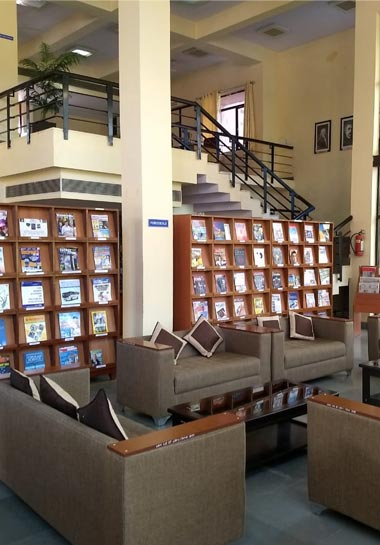

ABOUT LNMIIT
VISION
To establish a world class platform for creation of knowledge through quality research and its dissemination through technologically enabled teaching-learning pedagogy in the field of science, technology, engineering, arts and management. To become a catalyst in societal and national development, by ensuring continuous interaction with industry and other academic and research institutions in India and abroad.
MISSION
- To offer state of the art undergraduate programs in IT & ITES as well as core disciplines with emphasis on strong fundamentals.
- To establish centers of excellence in emerging areas to provide significant breakthrough required to solve real world problems.
- To make The LNMIIT as the most preferred institute for higher education across the country.
- To create intellectual property through innovations, quality research publications and patents.
- To instill core values of excellence, integrity, teamwork, professional ethics and environmental concerns.
FACILITIES
The LNMIIT, spread over 100-acre green campus, is at par with the best technological institutions in the country. It possesses IT-enabled classrooms, well-equipped laboratories, a rich central library, and other modern amenities.
Academic Area
There are 19 air-cooled lecture halls equipped with multimedia facilities, and with virtual teaching/ learning aids. Additionally, there are 2 seminar halls which are used as mini auditoriums and the institute also has an open-air theatre used as an auditorium. In addition, 400+ capacity multi-utility hall is also available as part of student activity centre. The institute has 32 state-of-the-art laboratories having latest technology equipment. To name a few, these are Electronics Lab, Microwave and Optical Communication Lab, Digital Signal Processing Lab, Computer Lab, Communication Lab, Electrical Characterization Division, Materials Synthesis Division, Advanced Instrumentation Division, DI Water Plant, Physics Lab, CAD Lab, Graphics Lab.
Central Library
The central library of the Institute is fully automated and equipped with the anti-theft security system. It boasts of 19000+ text and reference books, 190+ e-books, subscription of 65 National and International Periodicals, and about 48,160+ e-journals which are accessible through subscribed database.
Library has created an Institutional repository on Open Source software “D Space” which serves as a platform for accessing the scholarly contents generated by LNMIIT community; these include, thesis, BTP reports, book chapters, journal articles, conference papers, presentations and other intellectual capital items of the Institute like gazette, media and news coverage etc. The repository contains the metadata and abstracts of publications and is accessible on the campus network. The platform provides a way to manage scholarly content and publications and give them greater visibility and accessibility over time.

Shopping Complex
To fulfill the day-to-day needs of the campus residents, a mini shopping complex is in place which includes stationery shop, Amul parlour, laundry shop, salon, juice shop and a restaurant.
Accomodation
The Institute has four Boys and one Girls Hostels to accommodate the students inside the campus. Hostel rooms are furnished which are quite spacious and comfortable. Hostel’s infrastructure is fastened with amenies like 24-hour power supply, cold and hot water availability, Intranet and Internet connectivity, clean and hygienic environment, central air cooling system, common laundry support, reading room, common rooms with TV, various indoor games, 24-hour security and surveillance system, dedicated gym for girls inside girls Hostel and many more facilities inside the hostel and campus. The Institute has dedicated wardens, caretakers, and student members team to manage discipline in the hostels
Mess and Canteen
Presently there are two full-fledged Mess, Mess – A & Mess – B. Another Mess – C is functional inside the Boys Hostel – 4. No food preparations are carried out in Mess C as it is not a full fledged mess except the chapati making or bhatura or aloo/paneer paratha type of preparations.
In Institute at a glance, Mess and Canteen update with “Presently there are three full-fledged Mess, Mess – A, Mess – B, and Mess – C. All together the mess handling capacity at Mess A, B, and C is 2100 students (appx.). These messes serve breakfast, lunch, snacks, and dinner. Once a month, the mess organizes a special lunch/dinner. There is a provision for the sick meal also. During festivals, there is also a provision of the fast type of food.”
Other Facilities
Medical Unit
The Institute has a well-equipped medical unit. It has a resident doctor, three resident nurses and other support staff.The medical unit boasts of an emergency care section, physiotherapy unit, ambulance service, and tie-up with a nearby advanced hospital for immediate referral/treatment.
Student Activity Centre (SAC)
Student Activity Centre (SAC) is the hub of all indoor student activities. It comprises three synthetic badminton courts, multiple table tennis tables, one well-furnished squash court, boxing arena, karate arena with mats, two gyms comprising machines for every aspect of a fit body, chess and carom room. Additionally, there is dance and music studio and an Open-Air Theatre (OAT) where all cultural events of the Institute are organized.
Outdoor Sports Facilities
Including one cricket and football ground, two basketball and volleyball courts, a lawn tennis court, 3 km. jogging/cycling track, one open air gymnasium and a kabaddi ground.
Bus Services
The Institute has three buses which ply between Jaipur city and the campus at regular intervals every day. The campus residents also have access to the low floor bus of Rajasthan State Road Transport Corporation to commute to and fro the city.